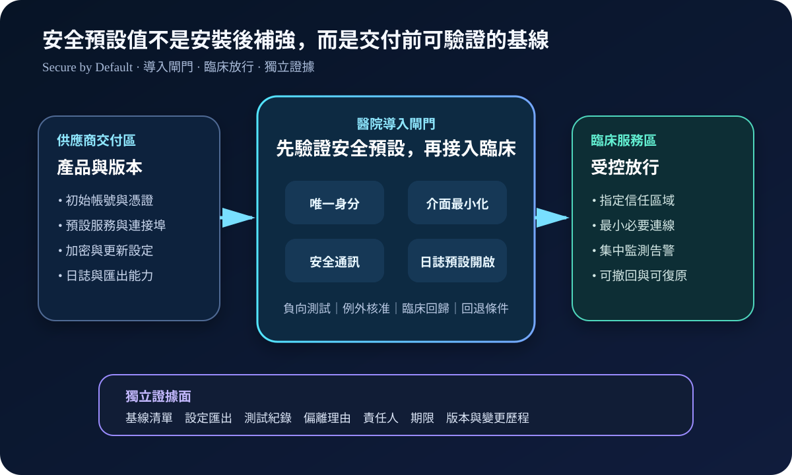
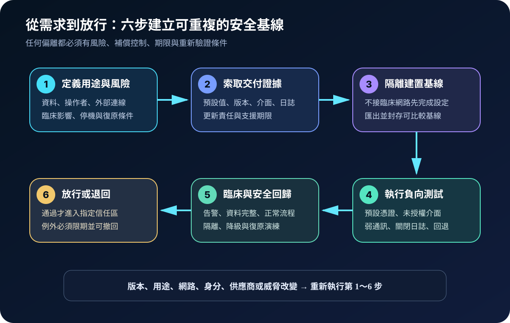
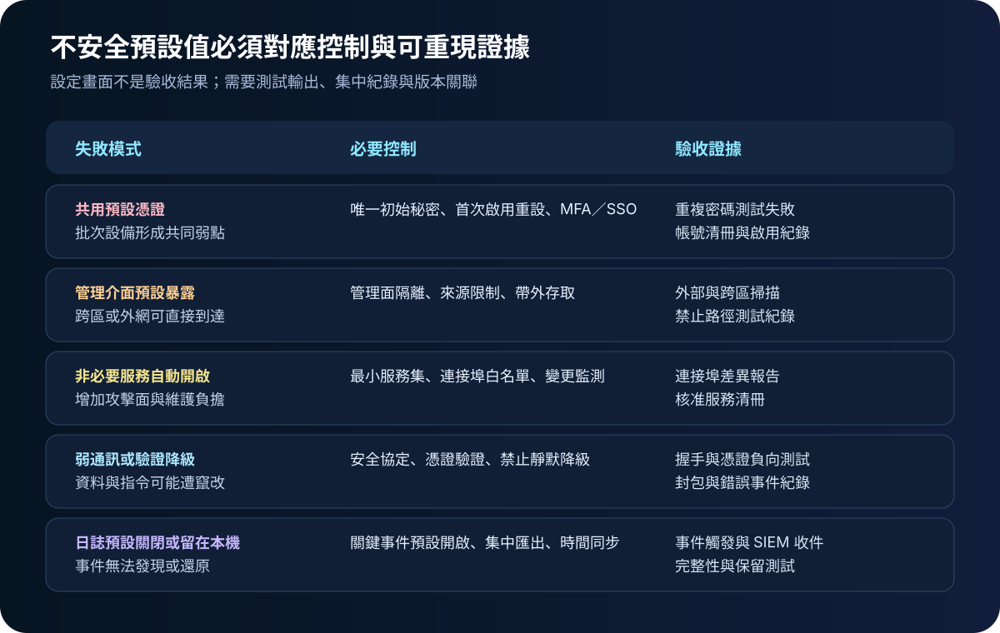

醫療資安國際觀察 · 2026-10-03
醫療系統如何避免不安全預設值：從交付基線到放行證據
作者：Dr. William｜醫療資訊與資安治理實務工作者
醫療系統若以共用密碼、開放管理介面、非必要服務或關閉日誌的狀態交付，風險會在設備大量部署後被同步放大。安全預設值應成為採購、導入與變更驗收的一部分，而不是上線後才補做的強化清單。
名詞解釋：安全設計與安全預設值分工不同
安全設計（Secure by Design）是把威脅模型、權限邊界、更新、弱點處理及復原能力放進產品生命週期。安全預設值（Secure by Default）則要求產品初次啟用時就採取較安全、較限制的設定，例如不使用共用預設密碼、不暴露管理介面、啟用必要日誌及安全通訊。醫院的交付基線是把這些主張轉成指定版本可測試、可比較的設定與證據。
國際現況與適用邊界
ENISA 於 2026 年 7 月 30 日發布安全設計與安全預設值實作手冊，將相關原則轉為可重複的生命週期行動與證據；內容面向歐盟產品安全與企業實作情境，不是台灣醫院的法定驗收標準。
ENISA 於 2026 年 7 月 22 日另發布醫院與醫療服務提供者採購資安指引，涵蓋採購生命週期、供應商應提供資訊及資安要求。該文件與歐盟 NIS2、醫療器材、資料保護及歐洲健康資料空間等制度相連，台灣機構不可直接引用為法定義務，但可參考其「需求在採購前定義、證據在交付時取得、責任延伸到維運」的治理方法。
NIST SP 800-218 Rev. 1 初版草案於 2025 年 12 月 17 日發布，提供軟體安全開發、交付與持續改善的共同語言，也指出採購方可用來與供應商溝通。草案狀態必須明確保留，不能當成最終標準。
適用原則：國際資料用來建立問題清單與證據框架；台灣醫療機構的實際要求仍須依本地法規、主管機關公告、採購契約、醫療器材管理與病人安全評估決定。
規劃：把「安全」改寫成可驗收成果
範圍應涵蓋應用程式、醫療設備、網路與安全設備、雲端服務、整合閘道及遠端維護工具。每項系統先定義預設身分、介面、通訊、服務、日誌、更新與復原要求，再指定供應商、資訊、資安、醫工、臨床及採購責任。驗收指標可包含共用預設憑證數、未核准服務數、管理面跨區可達率、關鍵事件集中收件率、基線偏離關閉時間、逾期例外數及版本變更後重新驗證率。

實作：六步建立交付與變更閘門
- 定義情境：記錄用途、資料、操作者、外部連線、停機容忍度與可能傷害。
- 索取證據：要求預設值清單、版本、帳號、介面、服務、加密、日誌、更新與支援期限資料。
- 隔離建置：產品先進入建置區，不直接連臨床網路；設定完成後匯出基線並保全完整性。
- 負向測試：驗證共用密碼、未授權介面、弱通訊、關閉日誌、權限升級及回退路徑確實遭阻擋或被偵測。
- 臨床回歸：確認安全設定不破壞告警、資料完整、醫療流程、隔離、降級及復原。
- 持續重驗：版本、用途、網路、身分整合、供應商或威脅改變時，重新比對基線並處理偏離。
風險：只拿到設定表，仍可能沒有控制效果
常見失敗包括供應商把 MFA、SSO、日誌匯出或安全更新列為額外付費功能；安裝團隊沿用通用帳密；為了整合而永久開放管理介面；安全通訊失敗時靜默降級；驗收只截圖不做負向測試；以及版本更新後基線未同步。例外必須記錄風險、補償控制、責任人、期限、退場條件與臨床影響。

可執行清單
- 契約是否明列初始帳號、管理介面、服務、通訊、日誌及更新的安全預設要求？
- 基本安全能力是否包含在產品基礎價格與支援範圍，而非另購才能啟用？
- 產品是否先在隔離區完成設定、掃描與負向測試，再進入臨床信任區？
- 是否禁止共用預設憑證，並驗證首次啟用、MFA／SSO 與帳號停用流程？
- 管理介面、遠端維護及非必要服務是否預設關閉或限制來源？
- 關鍵日誌是否預設開啟、時間同步並成功送達集中監控？
- 版本或組態變更後，是否自動產生差異並觸發重新驗收？
- 例外是否有補償控制、期限、責任人、風險接受與可撤回條件？
來源
- ENISA｜Secure by Design and Default Playbook（發布：2026-07-30；查閱：2026-10-03）
- ENISA｜Procurement guidelines for the cybersecurity of hospitals and healthcare providers（發布：2026-07-22；查閱：2026-10-03）
- NIST CSRC｜SP 800-218 Rev. 1, SSDF Version 1.2, Initial Public Draft（發布：2025-12-17；查閱：2026-10-03）
內容說明
本文依健康台灣深耕計畫相關治理內容整理，並參考 ENISA 與 NIST 公開資料，提出醫療系統安全預設值、交付基線、負向測試與持續重驗框架；不把歐盟制度或美國草案視為台灣法定義務，也不取代主管機關公告、法律意見、院內政策、醫療器材要求或個案病人安全評估。